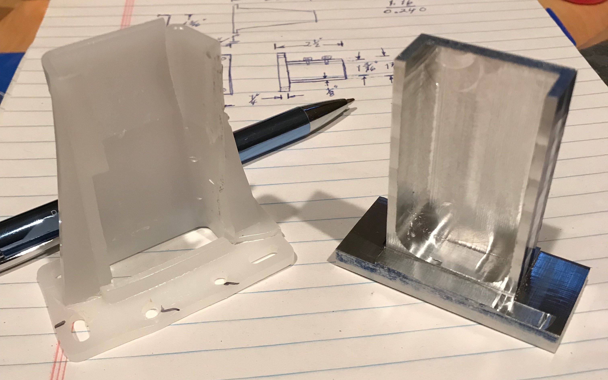

One of the large drawers in the pantry broke. The plastic bracket that holds the back end of the runner on the pantry side broke. It was temporarily fixed using a C-clamp to pinch the bracket around the U-shaped runner. A permanent fix was called for. A few measurements were taken from a good plastic bracket and from the runner. These led to the plan shown below. Essentially a U-shaped support will project from a base. The base will have holes to screw to the back of the pantry and the U-shaped support will have two screws to clamp the runner in place.


The project began with a 1" X 2 3/8" X 2 1/2" block of aluminum. A square corner was available and was used to mark out the general shape of the bracket. The bracket was then rough cut with a hacksaw down all four sides to leave a 5/16" thick base with a 3/4" X 1 1/4" X 2" projection. The part was held in the mill vise and the base bottom was set perpendicular to the milling table.
A narrow side of the projection was cut to the line using a 1/2" end mill. 0.020" were removed per 0.25" wide pass of the end mill. The projecting end of the base was thinned to 0.27" while the part was in the same setup. The bracket was flipped over the base set perpendicular to the table, and the other narrow side was cut to the line in a similar fashion and the projecting end of the base was cut to 0.27". This left the two wide sides of the projection to cut.
The narrow sides were remarked by holding the base against a 1-2-3 block. The projection was mounted in the mill vise using a square to make sure the base was vertical. The first side was cut as before with the 1/2" end mill. The part was flipped over and set on parallels and the second wide side was cut leaving a 1/2" thick projection.
With the bracket still in the vise the end mill was used to cut the 0.375" slot. A slot was cut with the 1/2" end mill to the base in 0.020" increments. This slot was then enlarged by taking 0.020" cuts at full depth. The drawer support rail was remeasured at 1.16" before cutting the slot to full width. This left the sides of the slot about 0.10" thick.

Four holes were drilled 1/4" in from the corners with a #10 drill to fit #6 wood screws. Two holes were drilled and tapped 5-40 through the top side of the slot at 1/4" and 7/8" centered across the width of the side wall. The plan was to use these holes for screws to press down on the top of the drawer guide and hold it in place.
The old bracket was removed and the new bracket was placed on the end of the drawer guide. The first problem became apparent. There was not sufficient room between the end of the guide and the back wall of the cabinet to fit the new bracket. This is due to both the thickness of the bracket back and to the large radius in the slot's corners. Both issues were tackled. The back of the bracket was thinned by about 1/8" on the mill. The radii in the corners were reduced with a dremel burr. Fixing this issue highlighted the second issue. The drawer guide is not a simple U-shaped part, but also has a lip coming down from the lower lip. This is visible just above the C-clamp's lower jaw in the picture above. Tightening the 5-40 screws just pushed the guide down and out of the new bracket. Consequently the guide was drilled and threaded for 5-40 screws and the bracket's 5-40 holes were opened up to 0.152". The 1/4" screws on hand went into the guide about 1/16" and the wheel on the drawer was impeded. The screws were shortened, the bracket fit nicely on the end of the guide, and the wheel moved freely.
With the bracket installed on the guide the guide was leveled. The distance to the side wall was set to match front and back. Four 3/4" #6 wood screws were used to fix the bracket to the back wall. The picture below shows the installed bracket. The drawer slid in easily and opens and closes like a charm!!
Cross this off the honey-do list!